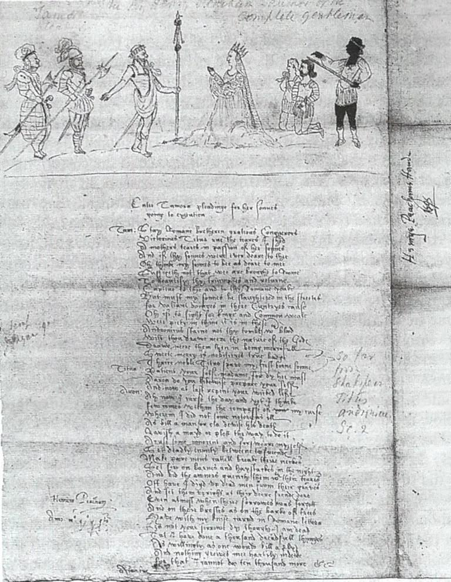

Neste verbete, apresenta-se o desenvolvimento do teatro renascentista a partir da retomada dos modelos da Antiguidade Clássica e de sua adaptação às transformações culturais da Europa. Discute-se a influência do Humanismo e da recuperação de autores e teorias antigas, bem como a formação da tragédia e da comédia em diferentes regiões. Destacam-se dramaturgos como Shakespeare e Gil Vicente, além de manifestações como o teatro pastoral e a Commedia dell’arte. Também são analisados os diversos espaços de apresentação, das estruturas temporárias aos teatros permanentes. Dessa forma, evidencia-se como o Renascimento reinterpretou tradições anteriores e contribuiu para a formação do teatro moderno.
Palavras-chave: Teatro; Tragédia; Renascimento; Shakespeare; Comédia; Arte.
O Renascimento teatral se relaciona com as transformações culturais que surgiram no fim da Idade Média, especialmente com o avanço do pensamento humanista e questionamentos acerca da visão escolástica. Com a queda de Constantinopla em 1453, marcando o fim do chamado Império Bizantino e o fim do medievo, a ampliação do acesso aos clássicos gregos no ocidente aumentou com a chegada de vários copistas e intelectuais no ocidente, aumentando o interesse na cultura greco-romana. Nesse contexto, originou-se um desejo de desenvolver uma síntese harmoniosa entre os valores antigos com a tradição cristã.
Para a autora do História Mundial do Teatro, Margot Berthold, o marco simbólico da Renascença se situa em 1486, quando foram encenadas peças de autores clássicos como Plauto (comediógrafo) e Sêneca (tragediógrafo), representando a retomada consciente da dramaturgia antiga no teatro europeu.
O teatro renascentista retomou práticas associadas ao teatro antigo, como a participação exclusiva de homens na atuação.
Como nos teatros antigos, até os papéis femininos eram representados por atores homens. No entanto, a retomada de elementos clássicos não significava uma reprodução idêntica dos moldes antigos. As práticas se incorporaram às condições culturais e artísticas de seu tempo.
Quando comparadas às estruturas do medievo tardio, os espaços ligados à retomada teatral clássica possuíam estruturas mais modestas, focando mais na atuação, retórica e declamação, e não na grandiosidade dos espetáculos. A capacidade do ator transmitir o texto importava mais, ladeada pela valorização da eloquência e educação humanista.
O resgate da dramaturgia antiga também incentivou experiências de reconstrução e representação prática dos textos. Nomes como Konrad Celtis tiveram presença no movimento, buscando entender e trazer à cena formas dramáticas inspiradas na antiguidade. O interesse ia além de preservar o texto, buscando também compreender sua orientação na produção teatral de seu próprio presente.
Leitura de autores como Aristóteles ofereciam autoridade e fundamentos para a natureza e organização do drama, enquanto modelos arquitetônicos associados a Vitrúvio contribuíram para a concepção dos espaços cênicos. Assim, o teatro antigo procurou articular referências antigas, fundindo a autoridade de autores clássicos com necessidades e experiências teatrais modernas.
A tragédia renascentista desenvolveu-se com a forte influência dos modelos greco-romanos, especialmente de Sêneca, e reflexões teóricas de Aristóteles e Horácio. Os autores buscavam recuperar estruturas e convenções clássicas, adaptando-as às línguas e condições culturais de seu período.
Na França, a tragédia humanista usou formas métricas como o verso alexandrino, enquanto, na Inglaterra, o estilo sem rima (blank verse) era usado como forma de expressão dramática. Entre os primeiros exemplos temos Gorboduc (1561), de Thomas Norton e Thomas Sackville.
Na Itália, encontramos autores como Gian Giorno Trissino, com Sofonisba, e Giambattista Giraldi Cinthio, autor de Orbecche. Na França, Étienne Jodelle contribuiu na retomada do gênero nos moldes clássicos com Cléopatre Captive (1553), obra muito associada à formação trágica humanista francesa. A tragédia valorizava temas elevados, conflitos políticos, paixões intensas e situações capazes de causar terror e compaixão simultaneamente, estabelecendo uma oposição com o caráter mais descontraído da comédia.
Já na Inglaterra, essa tradição encontrou uma de suas expressões mais célebres com William Shakespeare (1564-1616). Shakespeare, presente no contexto elisabetano e jacobino, combinou referências clássicas com temas sociais e culturais de seu tempo. Autor de tragédias como Hamlet e Romeu e Julieta, e comédias como Megera Domada e Sonho de uma Noite de Verão, suas obras expunham conflitos de poder, vingança, amor, violência e variação de formas dramáticas usadas no período. Suas peças evidenciam que o resgate da Antiguidade não significa apenas uma reprodução rígida de seus modelos, mas sua transformação em novas formas teatrais.
No Renascimento, a comédia encontrou um terreno fértil, sobretudo com a recuperação de obras de Plauto e Terêncio. Os humanistas, estudando e encenando esses autores, utilizaram seus personagens, situações e estruturas como modelo para peças novas. Somados à tradições medievais, recursos literários e situações cotidianas, tais elementos permitiram o desenvolvimento de uma dramaturgia voltada para relações familiares, amorosas, sociais e econômicas.
O tom da comédia variava, desde um humor mais refinado ao estilo mais grosseiro e escatológico, abordando até mesmo temas ligados ao sagrado. Isso mostra que o gênero não se limitava apenas a fazer o público rir, mas também a refletir os aspectos sociais através de sua satirização.
Na Itália, destacaram-se Ludovico Ariosto, autor de La Cassaria e I Suppositi, Bernardo Dovizi da Bibbiena, com La Calandria, Niccolò Machiavelli (Nicolau Maquiavel) com sua obra La Mandragola, e Angelo Beolco, o Ruzante. Na Península Ibérica, destacou-se Fernando de Rojas, autor de La Celestina, combinando elementos literários, cômicos e dramáticos.
Em Portugal, o melhor autor para representar a transformação entre o teatro medieval e renascentista é Gil Vicente (1465-1536). Suas obras misturam elementos religiosos e moralizantes do medievo com sátira, humor e personagens de diversos grupos sociais. Auto da Barca do Inferno, sua obra mais ilustre, crítica os vícios e comportamentos da sociedade portuguesa através da comicidade e alegorias.
Além dos gêneros trágico e cômico, outras formas dramáticas foram produzidas na Renascença. O teatro pastoral, inspirado na tradição campestre greco-romana, abordou temas ligados ao amor, à natureza e à vida dos pastores, destacando-se obras como Aminta (1573), de Torquato Tasso, e Il Pastor Fido (1590), de Giambattista Guarini.
Desenvolvida ao fim do séc XVI, a Commedia dell'arte destacou-se pelo trabalho de companhias profissionais, uso de máscaras, personagens-tipo e o improviso. Tais experiências contribuíram para expandir o caráter diversificado do teatro europeu, criando caminhos para as que viriam posteriormente.
No final do séc XVI e início do séc XVII, o Barroco ganha força em várias regiões da Europa. Na Espanha, autores como Lope de Vega e Calderón de la Barca foram fundamentais para o desenvolvimento do teatro barroco; na Inglaterra, a tradição que alcançou grande expressão com Shakespeare também atravessou a mudança de período. Portanto, o Renascimento não deve ser compreendido como uma etapa isolada da história, mas como parte de um processo de transformação que conduziu às formas teatrais dos séculos seguintes.
A diversidade do teatro europeu não estava apenas nos gêneros, mas também nos espaços destinados às apresentações. As obras podiam ser encenadas em estruturas temporárias, espaços públicos ou ambientes adaptados para o espetáculo, não havendo apenas um único modelo de edifício teatral que dominasse o continente. Em cidades italianas, peças clássicas eram encenadas em palcos improvisados, construídos para ocasiões específicas, enquanto os estudos humanistas sobre Vitrúvio influenciavam na organização de espaços e da cenografia. Durante o governo de Ercole I d'Este em Ferrara, as apresentações de Terêncio e Plauto foram realizadas em estruturas temporárias planejadas de acordo com os princípios vindos da interpretação renascentista da arquitetura vitruviana.
As encenações também ocorriam em ambientes ligados às cortes e aristocracias, como salões, pátios e espaços projetados para eventos e festas. Nisso, o ambiente se integrava ao espetáculo, com cenários, música, dança e efeitos. Essa relação entre festas cortesãs com teatro seria importante para o desenvolvimento dos espetáculos barrocos.
Já na Inglaterra, teatros elisabetanos, como o Globe Theatre, possuíam estruturas maiores e permanentes, recebendo apresentações de companhias profissionais voltadas para tais atividades. A documentação preservada aponta a existência de organização de palcos complexos, com entradas, movimento dos atores, objetos, música e outros elementos importantes para as apresentações.
O teatro renascentista foi marcado pela retomada de modelos da Antiguidade e, ao mesmo tempo, pela criação de novas formas de expressão teatral. O apreço aos textos clássicos, o desenvolvimento da dramaturgia, a diversidade de gêneros e a transformação dos espaços cênicos mostram que o período não se limitou apenas a resgatar elementos antigos, mas os interpretam de acordo com as necessidades de sua própria sociedade. Da tragédia humanista à comédia, dos espetáculos da corte aos monumentais teatros britânicos, o Renascimento consolidou mudanças que contribuíram de forma decisiva para a formação do teatro moderno, abrindo também caminhos para as experiências teatrais dos séculos seguintes.

Habilidade da BNCC: EM13CHS101 — analisar e comparar diferentes fontes e narrativas, considerando seus contextos históricos, para compreender processos sociais, culturais e históricos.
Justificativa: O conteúdo permite compreender o Renascimento teatral a partir da recuperação e da transformação de referências da Antiguidade Clássica, relacionando manifestações artísticas às mudanças culturais e sociais ocorridas na Europa.
Cena de Titus Andronicus, 1595. Único desenho da época conservado de uma peça de Shakespeare, atribuído a Henry Peacham (Coleção da Marquesa de Bath, Longleat).
Observe a representação de uma cena de Titus Andronicus, de William Shakespeare, atribuída a Henry Peacham, e considere as características da tragédia renascentista apresentadas no texto. A partir dos elementos visuais presentes na imagem — como os personagens, os figurinos, as armas, a disposição dos atores e a própria representação da cena — explique de que maneira essa fonte pode revelar a combinação entre referências da tradição clássica e características do teatro inglês do Renascimento.
Para responder, identifique pelo menos dois elementos da imagem e relacione-os às características da tragédia renascentista discutidas no verbete.
Declaração: uso de I.A. (Chat GPT) para formatação textual.